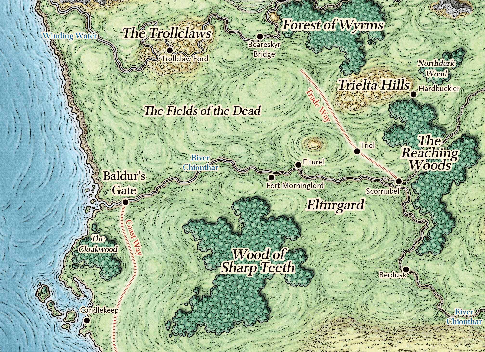

The holy city of Elturel, capital of Elturgard, has stood as a beacon of light since the Companion, an artificial sun, appeared over the city decades ago. High Observer Tharvius Kreeg has long presided over a peaceful, well-ordered city of pious folk watched over by the famous Hellriders, and by knights of Helm, Torm, Tyr, and Lathander.
It stands in stark contrast the larger city of Baldur's Gate, further down the Chionthar River. Baldur's Gate is known as a city of both wealth and extreme poverty, of intrigue, violence, and opportunity. It's a place where all faiths and creeds are welcome, at least so long as they stay out of the way of the wealthy and powerful. Rumors abound that Baldur's Gate is one of the best places on the Sword Coast for a worshipper of the Dead Three: Bane, god of tyranny, Myrkul, lord of bones, and Bhaal, god of murder.
The two cities have coexisted uneasily. Ulder Ravenguard, grand duke of Baldur's Gate, is attending a diplomatic summit in Elturel even now, in a bid to lower tensions and foster cooperation between the two cities. And indeed, the balance of power in the region is about to change dramatically. A great calamity lurks unseen on the horizon. Baldur's Gate is always dangerous, but soon the city will have a great need of heroes. Heroes with the courage even to stride boldly into the maw of hell.
The documents here will help you get acquainted with Baldur's Gate, Elturel, and their surroundings, and create a character with a background that ties into the setting. Please read the character creation guidelines carefully. The location documents below are optional, but will give you a leg up in creating a character that fits into the campaign.
